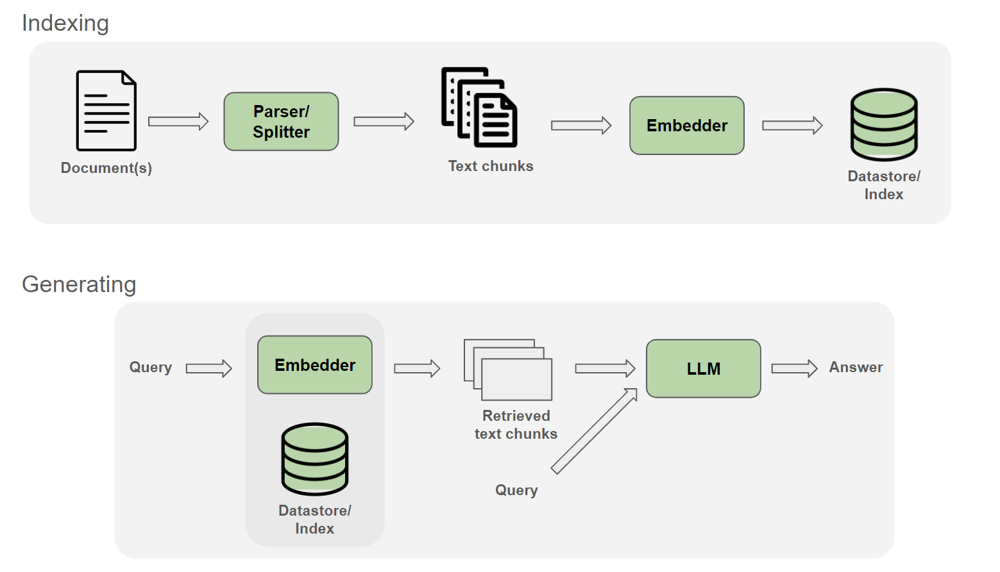
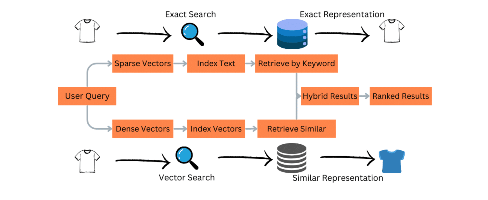

Retrieval-Augmented Generation (RAG) is a production-grade architecture that enhances language models by integrating external knowledge retrieval into the generation process. Unlike standalone models that rely only on parametric knowledge, RAG systems retrieve relevant information dynamically from large-scale data sources such as documents, databases, and APIs. This enables accurate, up-to-date, and domain-specific responses without retraining models. At enterprise scale, RAG systems must handle millions of documents, low-latency retrieval, and high concurrency. This handbook focuses strictly on RAG engineering, covering pipeline design, hybrid search, multi-hop reasoning, caching strategies, and system orchestration used in real-world production systems.
The RAG pipeline is the core architecture that transforms a user query into a grounded and factual response. Instead of relying only on a model’s internal knowledge, RAG retrieves relevant information from external data sources and injects it into the generation process. The pipeline typically involves query embedding, document retrieval, context construction, and response generation. Each stage must be optimized for latency, accuracy, and cost. A well-designed pipeline ensures that responses are both relevant and up-to-date, making it essential for enterprise AI systems such as knowledge assistants and search engines.

def rag_pipeline(query, docs):
retrieved = docs[0]
return f"Answer based on: {retrieved}"
print(rag_pipeline("What is AI?", ["AI is intelligence"]))
Hybrid search combines keyword-based retrieval (BM25) with semantic vector search to achieve better retrieval performance. BM25 focuses on exact keyword matches, making it effective for precise queries, while dense retrieval captures semantic meaning, enabling understanding of paraphrased or ambiguous queries. By combining both methods, hybrid search balances precision and recall. This is essential in real-world systems where queries vary widely in structure and intent. Enterprise systems use weighted scoring or rank fusion to combine results from both methods effectively.

alpha = 0.5 bm25_score = 0.7 dense_score = 0.8 score = alpha*bm25_score + (1-alpha)*dense_score print(score)
Chunking splits large documents into smaller segments before embedding. Proper chunking ensures better retrieval accuracy. Overlapping chunks preserve context, while smaller chunks improve precision. Poor chunking leads to irrelevant retrieval results.
def chunk(text, size=100):
return [text[i:i+size] for i in range(0,len(text),size)]
Re-ranking improves retrieval quality by applying a second-stage model to refine results. First-stage retrieval is fast but approximate, while re-ranking ensures higher accuracy.
Multi-hop RAG is an advanced retrieval strategy that enables reasoning across multiple documents. Instead of retrieving information in a single step, the system performs iterative retrieval, refining the query at each step. This allows the model to connect information from different sources, making it suitable for complex queries. Multi-hop RAG is essential for tasks requiring deep reasoning or multi-step understanding.
def multi(query):
return "step1 result + step2 result"
Caching reduces latency and cost by storing results of frequent queries. Enterprise systems cache embeddings, retrieval results, and final responses.
cache={}
def get(q):
if q in cache: return cache[q]
cache[q]="result"
return cache[q]
Vector databases enable fast similarity search over embeddings. They use ANN algorithms to scale to millions of vectors.
Enterprise RAG systems dynamically select retrieval strategies such as hybrid or multi-hop based on query complexity.
def route(q):
return "multi-hop" if "complex" in q else "hybrid"
RAG systems are evaluated using metrics like recall@k, precision, and answer faithfulness.
In production RAG systems, user queries are rarely clean, structured, or retrieval-friendly. Users often provide incomplete, ambiguous, or conversational inputs that cannot directly map to relevant documents. The Query Understanding Layer solves this problem by transforming raw input into structured, optimized queries for retrieval. This includes classification (simple vs complex queries), rewriting, expansion, and decomposition into sub-queries. This layer is critical because retrieval quality directly depends on query quality. Without it, even the best vector databases and ranking systems fail. Enterprise RAG systems rely heavily on this layer to ensure high recall and relevance across diverse user inputs.
def understand(query):
if len(query.split()) < 3:
return query + " detailed explanation"
return query
Context compression is a critical optimization layer in RAG systems that ensures only the most relevant information is passed to the generation model. Retrieved documents are often large and redundant, exceeding token limits and increasing cost. Compression techniques include filtering, summarization, deduplication, and ranking-based pruning. This step ensures that the final context is concise, relevant, and information-dense. Without context compression, systems either exceed token limits or include noisy information, degrading output quality. Enterprise systems use advanced compression strategies to balance accuracy and efficiency.
def compress(docs):
return docs[:2] # top-k filtering
Latency is a major challenge in production RAG systems. Sequential execution of embedding, retrieval, and generation increases response time. Asynchronous pipelines solve this by parallelizing operations such as retrieval from multiple sources, embedding computation, and ranking. This significantly reduces end-to-end latency. Enterprise systems use async execution frameworks and parallel retrieval strategies to achieve sub-second response times even under high load.
import asyncio
async def retrieve():
return "doc"
async def pipeline():
results = await asyncio.gather(retrieve(), retrieve())
return results
Caching in enterprise RAG systems is not a single layer but a hierarchy. L1 cache stores recent queries, L2 stores embeddings, and L3 stores generated responses. This layered approach significantly reduces compute cost and latency. Proper cache invalidation and update strategies are required to maintain consistency with dynamic data sources.
cache = {}
def get(q):
return cache.get(q, "miss")
Production RAG systems require continuous evaluation to maintain quality. Offline evaluation uses datasets to measure retrieval and generation performance, while online evaluation uses user feedback and A/B testing. Metrics include recall@k, precision, and answer faithfulness. Without a proper evaluation pipeline, systems degrade over time.
RAG systems are vulnerable to prompt injection and malicious document retrieval. Attackers can manipulate retrieved content to influence model outputs. Enterprise systems must sanitize inputs, validate sources, and filter outputs to ensure safe operation.
Enterprise RAG systems continuously improve using feedback loops. User interactions, clicks, and corrections are stored and used to refine retrieval ranking and query understanding. This transforms static systems into adaptive systems that improve over time.
The API layer exposes RAG capabilities to applications via stable, versioned endpoints. It abstracts the internal pipeline (query understanding, retrieval, compression, and generation) and provides consistent request/response contracts. At scale, this layer must support authentication, rate limiting, streaming responses, and observability. Designing clean APIs is critical for developer adoption and backward compatibility. Enterprises typically provide endpoints for query, ingestion, and admin operations, along with SDKs. This layer is also where request validation and routing decisions begin.
from fastapi import FastAPI
app = FastAPI()
@app.post("/rag/query")
def query(payload: dict):
q = payload["query"]
return {"answer": "generated answer", "sources": []}
A production RAG system continuously ingests data from documents, databases, and APIs. The ingestion pipeline handles parsing, cleaning, chunking, embedding, and indexing. It must be robust to varied formats (PDF, HTML, CSV), support incremental updates, and maintain consistency with the vector index. Scheduling (batch vs streaming), deduplication, and metadata extraction are key. Without a reliable ingestion pipeline, retrieval quality degrades quickly as data becomes stale or inconsistent.
def ingest(doc):
chunks = [doc[i:i+200] for i in range(0, len(doc), 200)]
embeddings = [len(c) for c in chunks] # placeholder
return list(zip(chunks, embeddings))
RAG-as-a-Service must isolate data across tenants (customers, teams, or apps). Multi-tenancy ensures each tenant’s data, indexes, and queries are logically or physically separated. Approaches include namespace-based isolation within a shared vector DB or dedicated indexes per tenant. Access control, encryption, and quota enforcement are essential. Proper multi-tenancy design prevents data leakage and enables scalable growth without duplicating infrastructure unnecessarily.
store = {}
def index(tenant, doc):
store.setdefault(tenant, []).append(doc)
RAG systems incur costs from embedding, retrieval, and generation. Without controls, expenses scale with usage. Cost management includes token budgeting, adaptive context sizing, caching, and routing to smaller models when possible. Systems often enforce per-request or per-tenant budgets, trimming context or limiting top-k retrieval dynamically. Observability feeds into cost dashboards to optimize spend without sacrificing quality.
def budget(tokens_in, tokens_out, price=1e-5):
return (tokens_in + tokens_out) * price
Rate limiting protects the system from abuse and ensures fair usage across tenants. Quotas can be defined per second (RPS), per minute, or per day, along with token limits. Implementations include token buckets and leaky buckets. Combined with authentication, rate limits maintain system stability under load and enforce subscription tiers in SaaS products.
import time
last = {}
def allow(user, interval=1):
now = time.time()
if user not in last or now - last[user] > interval:
last[user] = now
return True
return False
Streaming returns tokens incrementally to reduce perceived latency and improve UX. For RAG, streaming can begin after initial context is ready, sending partial outputs while generation continues. Implementations use server-sent events (SSE) or WebSockets. Care must be taken to handle cancellations, timeouts, and backpressure.
def stream(tokens):
for t in tokens:
yield t
Observability provides visibility into each stage of the RAG pipeline: query understanding, retrieval latency, hit rates, context size, and generation time. Distributed tracing ties these stages into a single request timeline. Metrics and logs enable debugging, capacity planning, and cost optimization. Without observability, diagnosing failures or regressions is extremely difficult.
import time
t0 = time.time()
# run pipeline
print("latency:", time.time() - t0)
RAG systems evolve: embeddings, indexes, prompts, and routing logic change over time. CI/CD pipelines automate testing and deployment of these components. Versioning ensures safe rollbacks and A/B testing between configurations (e.g., different chunking or ranking strategies). Blue/green deployments and canary releases minimize risk.
def route(version="v1"):
return "new" if version=="v2" else "old"